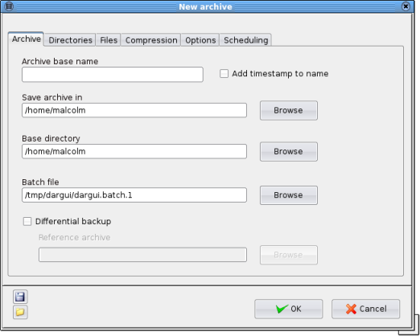

Creating archives: main options
To create a new archive select File->New. The "New Archive" window will appear.

There are six tabs of options in the "New Archive" window but in most cases you will only use the first three, "Archive", "Directories" and "Files". The first of these, "Archive", is used to set the following options:
- Archive base name - Enter a suitable name for the archive, for example the name of the root directory of the backup or a name decribing the contents such as "Photographs" or "Letters". If you select the option "Add timestamp to name" then a suffix will be added to the name giving the time and date that the archive was created in the format yyyymmddhhmm.
Dar will automatically add a slice number and the suffix "dar" so your final archive will end up with a name like "Photographs.1.dar" or "Photographs_200901092010.1.dar".
- Save archive in - enter the directory in which you want to save the archive. For scheduled backups it is recommended that this directory is outside the root directory of the backup.
- Base directory - enter the root directory of the backup. This is the which contains all the files and directories that you want to archive. The directories that you enter on the "Directories" tab must be in this directory.
For example, you may want to backup only the directories "/home/John/Documents/Letters" and "/home/John/Documents/Poems". You would enter "/home/John/Documents/" as your base directory.
- Batch file - batch files are temporary files used by DarGUI when creating archives. As they are normally created in the /tmp directory they are lost when the system is shut down. You will only need to change this option if you want to keep the batch file, for example, if you want to use it as a basis from which to write your own backup script.
- Differential backup A differential archive is an archive which stores the difference between the current state of the filesystem and the state of the filesystem when you last created a full backup. Performing a differential backup can take considerably less time than doing a full backup, and the resulting archive usually takes up much less space on your filesystem or storage media.
If you select this option you must also specify a Reference archive which is can be either a Dar archive or a Dar catalog. Dar will examine the files stored in the reference archive and compare them with the files on your system. It will only store them in the differential archive if they have been changed since the reference archive was created.